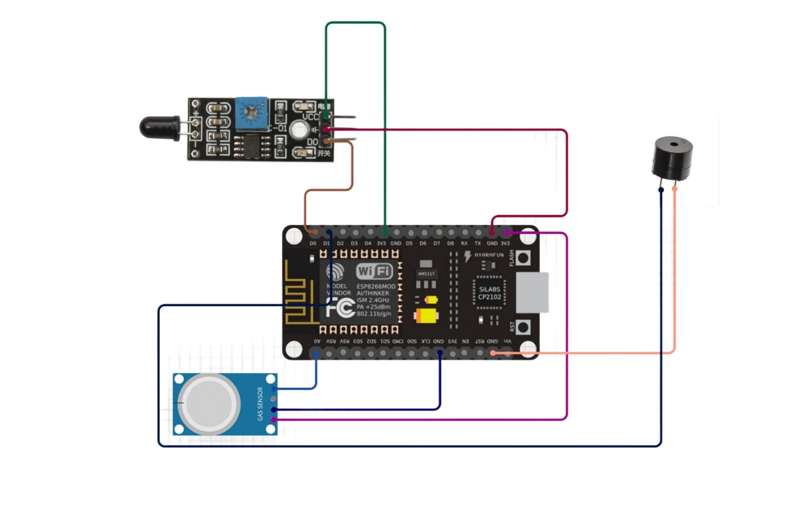

Introduction
The Smart Fire Detection Alarm is an IoT-based system that detects fire and gas leaks, providing real-time alerts and triggering alarms to prevent hazards. This system is designed to enhance safety in residential, commercial, and industrial settings by offering early detection and rapid response to fire and gas leak incidents.
Working Principle
The system monitors the environment with flame and gas sensors, triggering a buzzer and sending remote alerts to the IoT cloud if a fire or excessive gas is detected. This ensures early detection and rapid response to fire hazards. The working principle involves several key components and steps:
- Flame Sensor: The flame sensor detects the presence of fire by sensing the infrared light emitted by flames. It is highly sensitive and can detect fire from a considerable distance.
- Gas Sensor (MQ-4): The MQ-4 gas sensor detects the presence of combustible gases such as methane and propane. It provides an analog output proportional to the concentration of gas in the environment.
- Microcontroller (ESP8266): The ESP8266 microcontroller processes the signals from the sensors and takes appropriate actions. It is also responsible for sending data to the IoT cloud for remote monitoring.
- Buzzer: The buzzer is activated when a fire or gas leak is detected, providing an audible alert to nearby individuals.
- IoT Cloud Integration: The system sends real-time data to the IoT cloud, allowing users to monitor the status of their environment remotely. Alerts can be sent via email, SMS, or mobile app notifications.

The system operates as follows:
- The flame and gas sensors continuously monitor the environment for signs of fire or gas leaks.
- When the flame sensor detects a fire, it sends a signal to the microcontroller.
- The microcontroller activates the buzzer to alert nearby individuals and sends an alert to the IoT cloud.
- Similarly, when the gas sensor detects a high concentration of combustible gases, it sends a signal to the microcontroller.
- The microcontroller activates the buzzer and sends an alert to the IoT cloud.
- Users can receive real-time alerts on their mobile devices and take appropriate actions to mitigate the hazard.
Components Used
- ESP8266 (NodeMCU): A low-cost Wi-Fi microcontroller used for processing sensor data and connecting to the IoT cloud.
- Flame Sensor: Detects the presence of fire by sensing infrared light emitted by flames.
- MQ-4 Gas Sensor: Detects the presence of combustible gases such as methane and propane.
- Buzzer: Provides an audible alert when a fire or gas leak is detected.
- Power Supply: Provides the necessary power to the components.
- Connecting Wires: Used to connect the components together.
- Resistors: Used to limit the current flow to the sensors and buzzer.
- Breadboard: Used for prototyping and testing the circuit.
Applications
- Home Fire Safety Monitoring: Provides early detection of fire and gas leaks in residential settings, ensuring the safety of occupants.
- Industrial Hazard Prevention: Monitors industrial environments for fire and gas leaks, preventing potential hazards and ensuring worker safety.
- Warehouse Safety Systems: Detects fire and gas leaks in warehouses, protecting valuable inventory and preventing property damage.
- Commercial Buildings: Enhances safety in commercial buildings by providing real-time monitoring and alerts for fire and gas leaks.
- Remote Monitoring: Allows users to monitor the status of their environment remotely, providing peace of mind and enabling quick response to potential hazards.
Future Enhancements
- Integration with Smart Home Systems: Integrate the fire detection system with existing smart home systems for seamless automation and control.
- Advanced Analytics: Implement advanced analytics and machine learning algorithms to predict potential fire hazards and provide proactive alerts.
- Mobile App Development: Develop a dedicated mobile app for real-time monitoring, control, and alerts.
- Battery Backup: Add a battery backup to ensure the system remains operational during power outages.
- Enhanced Sensor Accuracy: Use advanced sensors with higher accuracy and sensitivity for improved detection capabilities.
- Integration with Emergency Services: Automatically notify emergency services in case of a fire or gas leak, ensuring a rapid response.